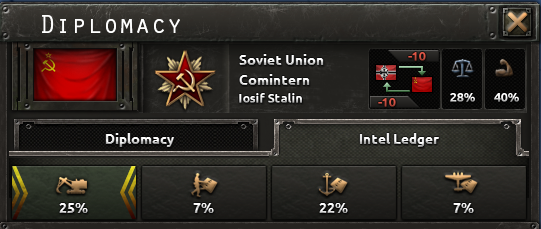
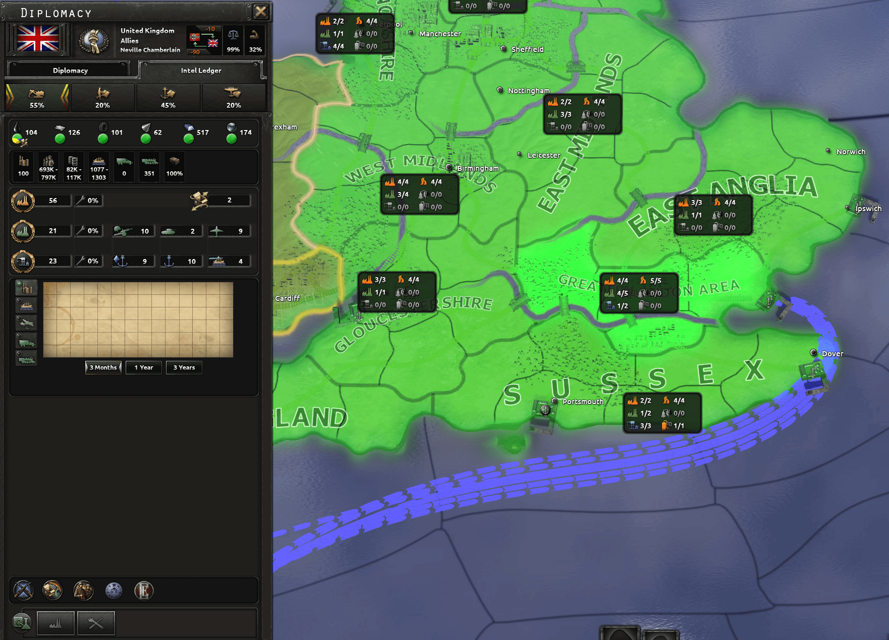
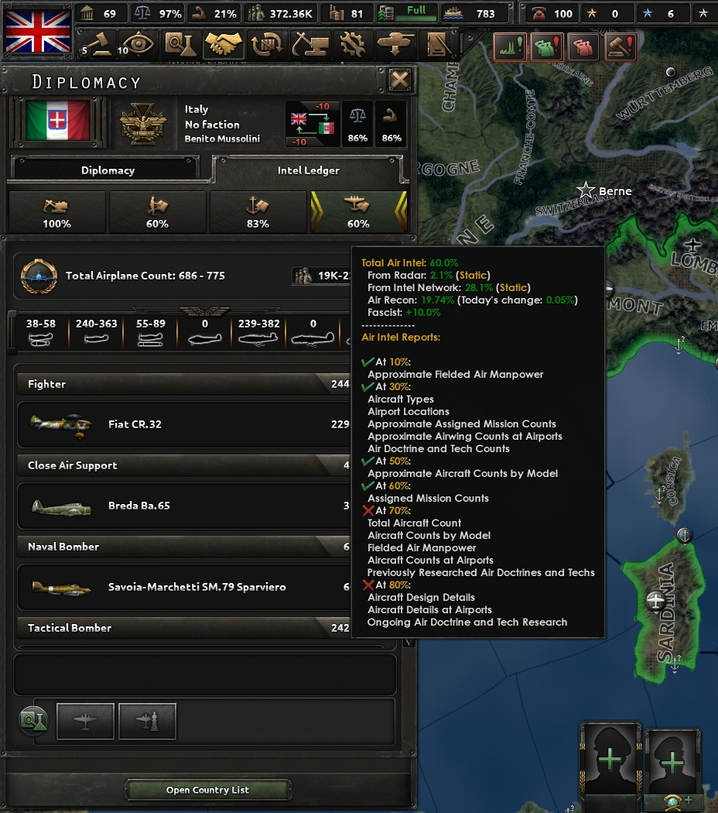

情报
原页面：Intel
情报（情报的缩写）是《钢铁雄心 4》中的一项机制，国家借此可以尝试观察其他国家在做什么。它可在情报台账中查看。在较低情报等级下，这包括看到其他国家有多少工厂、它们用 军用工厂与
军用工厂与 海军船坞在生产什么、它们研究了哪些科技、选择了哪些学说，以及它们库存中有哪些装备类型。在较高情报等级下，国家甚至能获得关于正在使用的确切装备变体与设计，以及目标国正在执行的特定空中任务与海军任务的信息。情报还能在陆上战斗中提供加成，对spotting与规避敌舰提供加成，降低敌方水雷的效果，以及探测敌方raids。
海军船坞在生产什么、它们研究了哪些科技、选择了哪些学说，以及它们库存中有哪些装备类型。在较高情报等级下，国家甚至能获得关于正在使用的确切装备变体与设计，以及目标国正在执行的特定空中任务与海军任务的信息。情报还能在陆上战斗中提供加成，对spotting与规避敌舰提供加成，降低敌方水雷的效果，以及探测敌方raids。
有了《抵抗运动》后，该机制得到极大扩展，纳入了来自 情报机构的升级，以及任务与行动（由operatives执行）和aerial reconnaissance（由侦察机完成）。
情报机构的升级，以及任务与行动（由operatives执行）和aerial reconnaissance（由侦察机完成）。
情报在多人游戏中尤为重要——在那里，原本多少有些可预测的 AI 对手被可能极难预测的人类对手取代。情报是应对这种不可预测性的主要手段之一：观察其他玩家在做什么，并在还来得及做出决策的时候预判对抗他们需要什么。在多人游戏中，阻止敌方获取情报的重要性同样上升：AI 对手无法预测或预判玩家的行动，人类对手却可以，因此在对手还来不及准备适当反制措施之前阻止他们看到你在做什么，可能对长期战略至关重要。
概述
情报共有四种类型：民用情报、陆军情报、海军情报和空军情报。每个国家对其他每个国家在这四个类别上的情报量都会分别追踪。每种情报都可以通过不同来源获得，而每种情报类型等级越高，既会向观察国提供关于目标国的不同被动信息，也可能为观察国对目标国带来加成（或惩罚）。
- 民用情报
- 民用情报涵盖与一个国家的生产、法案、贸易、资源、人力和后勤相关的信息，以及其industry与engineering科技。民用情报提供的信息在战前建设阶段可能尤其重要，有助于预判未来的敌人可能计划做什么并相应做好准备。民用情报不提供任何直接加成，只提供信息。
- 陆军情报
- 陆军情报涵盖与一个国家的陆军单位、特种部队、库存装备（包括变体与坦克设计）、陆军学说以及与陆军相关的军官团精神有关的信息，以及其infantry technology、support companies technology、armor technology和artillery technology。在陆上战斗中，陆军情报多于对方的一方会获得战斗属性加成。
- 海军情报
- 海军情报涵盖与一个国家的舰船（包括设计）、海军基地、活跃的海军任务、海军学说以及与海军相关的军官团精神有关的信息，以及其海军科技与naval support technology。对敌人的海军情报较低时，在对其争夺海军霸主地位时会受到惩罚。
- 空军情报
- 空军情报（又称airforce intel）涵盖与一个国家的飞机（包括设计）、空军基地、活跃的空中任务、空军学说以及与空军相关的军官团精神有关的信息，以及其air technology。如果目标国计划或对观察国发动raid，空军情报等级越高，观察国就会越早收到通知。
情报台账

情报台账是查看一个国家情报等级的地方，也是查看基于已获取情报的信息的主要场所。打开另一个国家的外交菜单，然后选择标有情报台账、紧邻标有外交的标签页旁的那个标签页即可找到它。
情报台账顶部有四个按钮，分别对应四种情报类型。每个按钮内都有一个百分比，表示当前国家对目标国在该情报类型上的情报等级。将鼠标悬停在其中一个按钮上会显示提示框，列出所有对该目标国情报等级总量有贡献的情报来源。选中这四个按钮中的任意一个都会打开一个界面，显示与该情报类型相关的详细信息；按钮左右两侧的黄色箭头表示当前打开的信息对应所示的情报类型。
一般来说，情报等级越高，情报台账中可用的信息就越多，已有信息也会变得更精确。更多细节请查阅civilian intel、army intel、navy intel和air intel各自的效果章节。
民用情报
民用情报通常侧重于一个国家的经济，在广泛的主题上提供大量信息，但除了这些信息之外不提供其他加成。其取值范围在0%与100%之间。[1]
民用情报来源
| 意识形态 | 向他国提供的民用情报 | 贸易法案 | 向他国提供的民用情报 | |
|---|---|---|---|---|
| +20% | +40% | |||
| +10% | +20% | |||
| +15% | +10% | |||
| +20% | +0% | |||
| +40% | ||||
| 自给自足 | +0% | |||
| 经济特区 | +80% | |||
此外，打击敌国的贸易运输船队可以临时提供额外的民用情报。基础情报获取率为每+1%[2]运输船队每天贸易，不过这还会受到赋予来自海战的全部情报的动态获取率与衰减率进一步修正；详见专门的navy intel sources章节。以此方式获得的民用情报的有效上限为+10%，[3]而以此方式获得的民用情报硬上限为+15%。[4]硬上限不会直接计入一个国家的民用情报，但在其范围内获得的情报可以起到缓冲作用，在情报衰减影响一个国家的有效民用情报之前先行吸收衰减。
某些国家精神和政治顾问可以减少提供给其他国家的民用情报量，或增加从其他国家获得的民用情报量。其中最值得注意的是德国的 梅福券精神，以及 SMERSH 解锁的守口如瓶为苏联提供的决议，二者都能显著降低提供给其他国家的民用情报量。


 雷达站可以根据其等级与整体覆盖度提供民用情报。详见专门的radar章节。
雷达站可以根据其等级与整体覆盖度提供民用情报。详见专门的radar章节。
 《抵抗运动》解锁了更多潜在的民用情报来源，既有来自情报机构的，也有来自 空中侦察的。详见专门的情报机构与air recon章节。没有《抵抗运动》时，国家可以根据其相对目标国加密等级的解密等级获得额外的民用情报。详见专门的legacy cryptology
《抵抗运动》解锁了更多潜在的民用情报来源，既有来自情报机构的，也有来自 空中侦察的。详见专门的情报机构与air recon章节。没有《抵抗运动》时，国家可以根据其相对目标国加密等级的解密等级获得额外的民用情报。详见专门的legacy cryptology 章节。
章节。
最后，当观察国与一位对某目标国拥有更多民用情报的盟友处于同一阵营时，观察国可获得二者情报差值的30%[5]，作为针对该目标国的额外民用情报。
民用情报效果

民用情报提供可在情报台账的民用情报标签页中查看的信息。某些类型的信息对民用情报有二元要求：要么该国对目标拥有足够的民用情报从而能看到，要么看不到。另一些类型的信息则更有层次：一个国家必须先拥有足够的民用情报才能看到目标，但信息起初非常模糊，会随民用情报增多而变得更精确。其中许多效果汇总于下表。此外，所有法案、国家精神和设计公司始终可见。[6]
| 民用情报 等级 | 生产[7] | 运输船队[10] | 卡车[11] | 列车[12] | [13] 补给 | 资源与贸易[14] | 国策[15] | 科技[16] | 图表[17] | 其他[18] | ||
|---|---|---|---|---|---|---|---|---|---|---|---|---|
| 0% | ??? | ??? | ??? | ??? | ??? | ??? | ??? | 生产的资源与traded | Hidden | 「无」 | 「无」 | 按州统计的建筑数量（±70%，情报越多范围越窄） |
| 10% | 人力（±50%，情报越多范围越窄） | 运输船队数量（±50%，情报越多范围越窄） | 卡车数量（±50%，情报越多范围越窄） | 列车数量（±50%，情报越多范围越窄） | 补给范围（±50%，情报越多范围越窄） | |||||||
| 20% | ||||||||||||
| 30% | 燃料储备（±50%，情报越多范围越窄） | 工厂 |
| |||||||||
| 40% | ||||||||||||
| 50% | 确切的 |
确切的trucks数量 | 确切的trains数量 | 确切的补给范围 | 已完成的国策 | 已完成的engineering technologies与工业科技数量 |
| |||||
| 60% | ||||||||||||
| 70% | 确切的燃料储备 | 确切的人力储备 |
|
已完成的engineering technologies与工业科技 |
| |||||||
| 80% |
|
| ||||||||||
| 90% | ||||||||||||
| 100% | 确切的运输船队数量 |
陆军情报
陆军情报通常侧重于一个国家的陆上军事力量，并可为陆军情报多于对方的一方提供陆战加成。其取值范围在0%与100%之间。[1]
陆军情报来源
陆军情报的主要来源是目标国执政党的意识形态以及对目标陆军单位的陆战。从意识形态获得的情报如下：
| 意识形态 | 向他国提供的陆军情报 |
|---|---|
| +5% | |
| +7.5% | |
| +10% | |
| +10% |
打击陆军单位敌方单位（在陆上战斗中）可以临时提供针对敌方单位所属国的陆军情报。以此方式获得的陆军情报有效上限为+30%，[19]而以此方式获得的陆军情报硬上限为+40%。[20]硬上限不会直接计入一个国家的陆军情报，但在其范围内获得的情报可以起到缓冲作用，在情报衰减影响一个国家的有效陆军情报之前先行吸收衰减。
基础每日陆军情报获取率为：每个活跃的+1%[21]提供陆上战斗，再加上战斗中每个正在积极作战的敌方师提供+0.5%[22]、战斗中每个处于预备的敌方师提供+0.1%[23]、每个从战斗中撤退的敌方师提供+0.2%[24]，全部乘以0.01x。[25]随后，基础获取量会根据观察国或其盟国在特定1.075x中每点侦察值获得陆上战斗修正，还可用带有 积极侦察的军官团一步不退
积极侦察的军官团一步不退 精神进一步提高。每天从陆上战斗实际获得的情报量为：[26]
精神进一步提高。每天从陆上战斗实际获得的情报量为：[26]
: Daily intel gain = 0.25 · ln ( 1 + base intel gain ) + \frac base intel gain 10
从陆上战斗获得的全部情报以每天0.985x的速度衰减。[27]
某些国家精神和政治顾问可以减少提供给其他国家的陆军情报量，或增加从其他国家获得的陆军情报量。其中最值得注意的是德国的 梅福券精神，以及 SMERSH 解锁的守口如瓶为苏联提供的决议，二者都能显著降低提供给其他国家的陆军情报量。有了 一步不退之后，
一步不退之后， 精英中的精英军官团精神（仅限
精英中的精英军官团精神（仅限 民主主义国家）也会减少提供给其他国家的陆军情报量。
民主主义国家）也会减少提供给其他国家的陆军情报量。


 雷达站可以根据其等级与整体覆盖度提供陆军情报。详见专门的radar章节。
雷达站可以根据其等级与整体覆盖度提供陆军情报。详见专门的radar章节。
 《抵抗运动》解锁了更多潜在的陆军情报来源，既有来自情报机构的，也有来自 空中侦察的。详见专门的情报机构与air recon章节。没有《抵抗运动》时，国家可以根据其相对目标国加密等级的解密等级获得额外的陆军情报。详见专门的legacy cryptology
《抵抗运动》解锁了更多潜在的陆军情报来源，既有来自情报机构的，也有来自 空中侦察的。详见专门的情报机构与air recon章节。没有《抵抗运动》时，国家可以根据其相对目标国加密等级的解密等级获得额外的陆军情报。详见专门的legacy cryptology 章节。
章节。
最后，当观察国与一位对某目标国拥有更多陆军情报的盟友处于同一阵营时，观察国可获得二者情报差值的30%[5]，作为针对该目标国的额外陆军情报。
陆军情报效果
陆军情报提供可在情报台账的陆军情报标签页中查看的信息。某些类型的信息对陆军情报有二元要求：要么该国对目标拥有足够的陆军情报从而能看到，要么看不到。另一些类型的信息则更有层次：一个国家必须先拥有足够的陆军情报才能看到目标，但信息起初非常模糊，会随陆军情报增多而变得更精确。其中许多效果汇总于下表。此外，所有军官团选择与最高统帅部始终可见。[6]
此外，如果观察国对目标国的陆军情报多于目标国对观察国的陆军情报，观察国的陆军单位在与目标国的陆军单位于陆上战斗中交战时可以获得战斗加成。从陆军情报差值至少达到5[28]个百分点开始，陆军情报每相差一个百分点，观察国的单位就在软攻、硬攻、防御和突破属性上获得+0.3%加成，在相差+15%[29]个百分点时最多获得50[30]。
| 陆军情报 等级 | 师总数[31] | 特种部队[32] | 师编制[34] | 装备[35] | 科技[16] | 假情报 |
补给运输船队[37] | |
|---|---|---|---|---|---|---|---|---|
| 0% | ??? | 特种部队营总数（±70%，情报越多范围越窄） | ??? | 「无」 | 「无」 | 「无」 | 「无」 | 「无」 |
| 5% | 已投入战场的师总数（±80%，情报越多范围越窄） | |||||||
| 10% | 已投入战场的人力（±50%，情报越多范围越窄） | |||||||
| 20% | ||||||||
| 30% | 基本编制信息 | 装备库存（±50%，情报越多范围越窄） | 已完成的infantry technologies、support companies technologies、armor technologies、artillery technologies和陆军学说数量 | |||||
| 40% | ||||||||
| 50% |
|
补给运输船队航线 | ||||||
| 60% | ||||||||
| 70% | 确切的已投入战场师总数 | 确切的已投入战场人力 |
|
|
已完成的infantry technologies、support companies technologies、armor technologies、artillery technologies和陆军学说 | 确切的补给运输船队信息 | ||
| 80% |
|
已完成与正在研究的infantry technologies、support companies technologies、armor technologies、artillery technologies和陆军学说 | 无法成为目标国行动「植入假情报」的目标 | |||||
| 90% |
| |||||||
| 100% | 确切的特种部队营总数 |
海军情报通常侧重于一个国家的海军，而对敌人的海军情报过少会使发现和对抗其海军变得更困难。其取值范围在0%与100%之间。[1]
海军情报的主要来源是目标国的贸易法令、其执政党的意识形态，以及与目标国舰船的海战。从前两项获得的情报如下：
| 意识形态 | 向他国提供的海军情报 | 贸易法案 | 向他国提供的海军情报 | |
|---|---|---|---|---|
| +20% | +20% | |||
| +12.5% | +10% | |||
| +10% | +5% | |||
| +20% | +0% | |||
| +40% | ||||
| 自给自足 | +0% | |||
| 经济特区 | +30% | |||
在海战中打击敌方舰船可以临时提供关于这些舰船所属国家的情报。以此方式获得的海军情报有效上限为+40%，[3]而以此方式获得的海军情报硬上限为+45%。[4]硬上限不会直接计入一个国家的海军情报，但在其范围内获得的情报可以起到缓冲作用，在情报衰减影响一个国家的有效海军情报之前先行吸收衰减。
基础每日海军情报获取率为：+1%[38]（按每海战计），每艘敌方潜艇+0.2%[39]，每艘敌方屏卫舰+0.5%[40]，每艘敌方潜艇+0.2%[41]，每艘敌方主力舰+1%[42]，以及海战中的航空母舰所搭载的每架飞机+0.05%[43]。每天从海战实际获得的情报量（对全部情报类型均适用）为：[44]
: Daily intel gain = 0.02 · ln ( 1 + base intel gain ) + \frac base intel gain 200
从海战中获得的全部情报以每天0.985x的速度衰减。[45]
某些国家精神和政治顾问可以减少提供给其他国家的海军情报量，或增加从其他国家获得的海军情报量。其中最值得注意的是德国的 梅福券精神，以及 SMERSH 解锁的守口如瓶为苏联提供的决议，二者都能显著降低提供给其他国家的海军情报量。有了 一步不退之后，
一步不退之后， 精英中的精英军官团精神也会减少提供给其他国家的海军情报量。
精英中的精英军官团精神也会减少提供给其他国家的海军情报量。


 雷达站可以根据其等级与整体覆盖度提供海军情报。详见专门的radar章节。
雷达站可以根据其等级与整体覆盖度提供海军情报。详见专门的radar章节。
 《抵抗运动》解锁了更多潜在的海军情报来源，既有来自情报机构的，也有来自 空中侦察的。详见专门的情报机构与air recon章节。没有《抵抗运动》时，国家可以根据其相对目标国加密等级的解密等级获得额外的海军情报。详见专门的legacy cryptology
《抵抗运动》解锁了更多潜在的海军情报来源，既有来自情报机构的，也有来自 空中侦察的。详见专门的情报机构与air recon章节。没有《抵抗运动》时，国家可以根据其相对目标国加密等级的解密等级获得额外的海军情报。详见专门的legacy cryptology 章节。
章节。
最后，当观察国与一位对某目标国拥有更多海军情报的盟友处于同一阵营时，观察国可获得二者情报差值的30%[5]，作为针对该目标国的额外海军情报。
对目标国的海军情报过少时，在尝试对目标国舰船建立或争夺海军霸主地位会受到惩罚。当对目标国的海军情报低于（模块 Defines 无法识别定义「NDefines.NIntel.NAVAL_SUPREMACY_INTEL_LOW」）[46]时，观察国每缺少一个百分点的海军情报，就对目标国的海军霸主地位受到表达式错误：意外的 < 运算符。%惩罚，最多受到表达式错误：意外的 < 运算符。%[47]的惩罚，即在海军情报为（模块 Defines 无法识别定义「NDefines.NIntel.NAVAL_SUPREMACY_INTEL_LOW_SUPREMACY_PENALTY_START」）[48]或更低时。
如果观察国对目标国的海军情报多于目标国对观察国的海军情报，观察国对其的发现速度获得加成，目标国对观察国的发现速度则受到惩罚。从海军情报差值至少达到5[49]个百分点开始，海军情报每相差一个百分点，观察国获得+0.25%发现速度，在海军情报相差+10%[50]个百分点时最多获得40[51]发现速度。目标国则对应地每相差一个百分点受到-0.25%发现速度惩罚，最高惩罚为-10%。
有了 全民持枪之后，如果观察国对目标国的海军情报多于目标国对观察国的海军情报，观察国因目标国水雷受到的伤害也会减少。从海军情报差值至少达到5[52]个百分点开始，海军情报每相差一个百分点，观察国从目标国水雷受到的伤害为-1.25%，在海军情报相差-50%[53]个百分点时最多降至40[54]。
全民持枪之后，如果观察国对目标国的海军情报多于目标国对观察国的海军情报，观察国因目标国水雷受到的伤害也会减少。从海军情报差值至少达到5[52]个百分点开始，海军情报每相差一个百分点，观察国从目标国水雷受到的伤害为-1.25%，在海军情报相差-50%[53]个百分点时最多降至40[54]。
| 海军情报 等级 | 舰队总数[55] | 特遣舰队总数[56] | 舰船总数[57] | 按类型统计的舰船数量[58] | 活跃的海军任务[60] | 装备[62] | 科技[16] | ||
|---|---|---|---|---|---|---|---|---|---|
| 0% | ??? | ??? | ??? | ??? | ??? | 「无」 | 附近的海军基地 | 「无」 | 「无」 |
| 5% | 已部署海军的人力（±50%，情报越多范围越窄） | ||||||||
| 10% | 舰队总数（±50%，情报越多范围越窄） | 舰船总数（±50%，情报越多范围越窄） | 已部署舰船的类型 | 附近海军基地的等级 | |||||
| 20% | |||||||||
| 30% | 确切的舰队总数 | 特遣舰队总数（±50%，情报越多范围越窄） | 已部署舰船的类型与数量（±50%，情报越多范围越窄） | 所有海军基地的等级与特遣舰队数量（±50%，情报越多范围越窄） | 已完成的海军科技、海军支援科技和海军学说数量 | ||||
| 40% | |||||||||
| 50% | 已分配的海军任务 | 舰船变体与设计的类型与名称 | |||||||
| 60% | |||||||||
| 70% | 确切的特遣舰队总数 | 已部署舰船的类型与确切数量 | 确切的已部署海军人力 | 所有海军基地的等级，以及确切的特遣舰队数量 | 已完成的海军科技、海军支援科技和海军学说 | ||||
| 80% | 确切的舰船总数 | 已分配的海军任务及特遣舰队数量 | 所有海军基地的等级，以及确切的特遣舰队数量与详情 | 完整的舰船变体与设计详情 | 已完成与正在研究的海军科技、海军支援科技和海军学说 | ||||
| 90% | |||||||||
| 100% |
空军情报
空军情报通常侧重于一个国家的空军，并提供探测飞机的加成，以及对raids的提前预警。其取值范围在0%与100%之间。[1]
空军情报来源
空军情报的主要来源是：意识形态（目标国执政党）、空战与目标国的飞机，以及陆上战斗和海战（目标国的飞机参与其中）。从意识形态获得的情报如下：
| 意识形态 | 向他国提供的空军情报 |
|---|---|
| +5% | |
| +7.5% | |
| +10% | |
| +10% |
打击飞机敌方舰船（在空战中）可以临时提供关于这些舰船所属国家的情报。以此方式获得的空军情报有效上限为+25%，[63]而以此方式获得的空军情报硬上限为+30%。[64]硬上限不会直接计入一个国家的空军情报，但在其范围内获得的情报可以起到缓冲作用，在情报衰减影响一个国家的有效空军情报之前先行吸收衰减。
基础每日空军情报获取率为：+1%[65]（按每strategic region计），在空战中再加上这些战斗中每架敌机+0%[66]，全部乘以0.2x。[67]每天从空战实际获得的情报量为：[68]
: Daily intel gain = 1 · ln ( 1 + base intel gain ) + \frac base intel gain 2
涉及敌方陆战的飞机也会产生空军情报。来自陆上战斗的基础每日空军情报获取率为：每个至少有一架敌方+1%[70]的陆上战斗获得飞机，再加上这些+0.1%[71]中每架敌机提供陆上战斗，全部乘以0.01x。[72]这还会受到赋予来自陆上战斗的全部情报的动态获取率与衰减率进一步修正，以及陆军单位的侦察值修正；详见专门的army intel sources章节。以此方式获得的空军情报的有效上限为+10%，[19]而以此方式获得的民用情报硬上限为+15%。[20]硬上限不会直接计入一个国家的空军情报，但在其范围内获得的情报可以起到缓冲作用，在情报衰减影响一个国家的有效空军情报之前先行吸收衰减。
涉及敌方海战的飞机也能产生空军情报。来自海战的基础每日空军情报获取率为：每个至少有一架敌方+1%[73]的海战获得飞机，再加上这些+0%[74]中每艘敌方航母飞机提供+0.01%[75]、每艘敌方非航母飞机提供海战，全部乘以1x。这还会受到赋予来自海战的全部情报的动态获取率与衰减率进一步修正；详见专门的navy intel sources章节。以此方式获得的空军情报的有效上限为+20%，[3]而以此方式获得的民用情报硬上限为+25%。[4]硬上限不会直接计入一个国家的空军情报，但在其范围内获得的情报可以起到缓冲作用，在情报衰减影响一个国家的有效空军情报之前先行吸收衰减。
某些国家精神和政治顾问可以减少提供给其他国家的空军情报量，或增加从其他国家获得的空军情报量。其中最值得注意的是德国的 梅福券精神，以及 SMERSH 解锁的守口如瓶为苏联提供的决议，二者都能显著降低提供给其他国家的空军情报量。有了 一步不退之后，
一步不退之后， 分支独立精神军官团精神也会减少提供给其他国家的空军情报量。
分支独立精神军官团精神也会减少提供给其他国家的空军情报量。


 雷达站可以根据其等级与整体覆盖度提供特别大量的空军情报。详见专门的radar章节。
雷达站可以根据其等级与整体覆盖度提供特别大量的空军情报。详见专门的radar章节。
 《抵抗运动》解锁了更多潜在的空军情报来源，既有来自情报机构的，也有来自 空中侦察的。详见专门的情报机构与air recon章节。没有《抵抗运动》时，国家可以根据其相对目标国加密等级的解密等级获得额外的空军情报。详见专门的legacy cryptology
《抵抗运动》解锁了更多潜在的空军情报来源，既有来自情报机构的，也有来自 空中侦察的。详见专门的情报机构与air recon章节。没有《抵抗运动》时，国家可以根据其相对目标国加密等级的解密等级获得额外的空军情报。详见专门的legacy cryptology 章节。
章节。
最后，当观察国与一位对某目标国拥有更多空军情报的盟友处于同一阵营时，观察国可获得二者情报差值的30%[5]，作为针对该目标国的额外空军情报。
空军情报效果
空军情报与探测raids密切相关。至少拥有10%[76]空军情报才能知道空袭已经发起，而拥有更多情报则可以在来袭空袭仍处于准备阶段时就探测到它们。对目标每有一个百分点的空军情报，空袭就能在其准备阶段提前一个百分点被发现：30%空军情报可在70%准备度时发现空袭，50%空军情报可在50%准备度时发现，70%空军情报可在30%准备度时发现，依此类推。[77]
需要注意的是，与陆军情报不同，空军情报不为空战提供任何加成。不过，装用《抵抗运动》后，破解敌方密码会为 空战提供一些加成。详见密码学。
空战提供一些加成。详见密码学。
| 空军情报 等级 | 航空队总数[78] | 按类型统计的航空队数量[79] | 活跃的空中任务[81] | 装备[83] | 科技[16] | ||
|---|---|---|---|---|---|---|---|
| 0% | 航空队总数（±50%，情报越多范围越窄） | 「无」 | ??? | 「无」 | 附近的空军基地 | 「无」 | 「无」 |
| 10% | 已部署航空队的人力（±50%，情报越多范围越窄） | ||||||
| 20% | |||||||
| 30% | 已部署航空队的类型 | 空中任务的飞机数量（±50%，情报越多范围越窄） | 所有空军基地的飞机数量（±50%，情报越多范围越窄） | 已完成的air technologies与空军学说数量 | |||
| 40% | |||||||
| 50% | 已部署航空队的类型与数量（±50%，情报越多范围越窄） | ||||||
| 60% | 空中任务的飞机确切数量 | ||||||
| 70% | 确切的航空队总数 | 已部署航空队的类型与确切数量 | 确切的已部署航空队人力 | 所有空军基地及其确切的飞机数量 | 已完成的air technologies与空军学说 | ||
| 80% | 所有空军基地，以及确切的飞机数量与详情 | 飞机变体与设计 | 已完成与正在研究的air technologies和空军学说 | ||||
| 90% | |||||||
| 100% |
雷达
 雷达站可以根据其覆盖度提供针对其他国家的各类额外情报。在最大覆盖度下，它们最多可对其他国家的+10%民用情报、+10%陆军情报、+20%海军情报和+20%空军情报。[84]来自雷达站的情报被视为「静态情报」，即它是瞬时获得与失去的。
雷达站可以根据其覆盖度提供针对其他国家的各类额外情报。在最大覆盖度下，它们最多可对其他国家的+10%民用情报、+10%陆军情报、+20%海军情报和+20%空军情报。[84]来自雷达站的情报被视为「静态情报」，即它是瞬时获得与失去的。
雷达站 的情报搜集效率取决于：目标国有多少省份处于其雷达覆盖范围内、目标国总共控制多少省份（他们控制的省份越多，从单个省份的雷达覆盖中搜集到的情报就越少），以及雷达站
的情报搜集效率取决于：目标国有多少省份处于其雷达覆盖范围内、目标国总共控制多少省份（他们控制的省份越多，从单个省份的雷达覆盖中搜集到的情报就越少），以及雷达站 本身的等级。在最高 6 级时，单个雷达站
本身的等级。在最高 6 级时，单个雷达站 的情报搜集效率为125%，[85]并随每缺少一级而线性下降，1 级时降至约20.833%效率。当多个雷达站
的情报搜集效率为125%，[85]并随每缺少一级而线性下降，1 级时降至约20.833%效率。当多个雷达站 覆盖同一个省份时，该省份上第一个站点之外的每个站点的情报搜集效率都会降低0.5 倍[86]。
覆盖同一个省份时，该省份上第一个站点之外的每个站点的情报搜集效率都会降低0.5 倍[86]。
当一个国家所控制的陆上省份被 100% 雷达覆盖时， 雷达站可以对该国提供+9%民用情报、+9%陆军情报、+0%海军情报和+18%空军情报。[87]这些数值会乘以每个雷达站的情报搜集效率，并随被雷达覆盖的受控陆上省份比例下降而线性减少。一个雷达站可以根据其覆盖范围内有多少省份是目标国控制的陆上省份，提供关于其他国家的额外情报。最大情况下，这相当于每
雷达站可以对该国提供+9%民用情报、+9%陆军情报、+0%海军情报和+18%空军情报。[87]这些数值会乘以每个雷达站的情报搜集效率，并随被雷达覆盖的受控陆上省份比例下降而线性减少。一个雷达站可以根据其覆盖范围内有多少省份是目标国控制的陆上省份，提供关于其他国家的额外情报。最大情况下，这相当于每 +5%民用情报
+5%民用情报 、+5%陆军情报、+0%海军情报和+12%空军情报提供雷达站，[88]再乘以该站点的情报搜集效率，以及它所覆盖且由目标国控制的陆上省份数，然后除以该站点覆盖的省份总数。
、+5%陆军情报、+0%海军情报和+12%空军情报提供雷达站，[88]再乘以该站点的情报搜集效率，以及它所覆盖且由目标国控制的陆上省份数，然后除以该站点覆盖的省份总数。
海面省份的雷达覆盖也会计入特定 雷达站的情报搜集效率，但其运作基于该省份所属strategic region中运作的舰船数量与类型。每艘潜艇最多可对其拥有者提供+5%海军情报，每艘屏卫舰最多可提供+10%海军情报，每艘主力舰最多可提供+20%海军情报，每艘航空母舰最多可提供+30%海军情报，[89]全部乘以它们所在strategic region的雷达覆盖比例，以及提供该覆盖的雷达站的情报搜集效率。
雷达站的情报搜集效率，但其运作基于该省份所属strategic region中运作的舰船数量与类型。每艘潜艇最多可对其拥有者提供+5%海军情报，每艘屏卫舰最多可提供+10%海军情报，每艘主力舰最多可提供+20%海军情报，每艘航空母舰最多可提供+30%海军情报，[89]全部乘以它们所在strategic region的雷达覆盖比例，以及提供该覆盖的雷达站的情报搜集效率。
 雷达站也会根据目标国运输船队中穿过其覆盖的战略地区的比例提供情报，其中包括用于贸易、补给和运送部队的船队。作为基准，这相当于每+0%民用情报、+0%陆军情报、+280%海军情报和+0%空军情报，按每雷达站每strategic region计，[90]再乘以目标国船队穿过该区域的比例，以及每个雷达站的情报搜集效率和它对每个
雷达站也会根据目标国运输船队中穿过其覆盖的战略地区的比例提供情报，其中包括用于贸易、补给和运送部队的船队。作为基准，这相当于每+0%民用情报、+0%陆军情报、+280%海军情报和+0%空军情报，按每雷达站每strategic region计，[90]再乘以目标国船队穿过该区域的比例，以及每个雷达站的情报搜集效率和它对每个 strategic region的整体覆盖度。
strategic region的整体覆盖度。
情报机构
情报机构可以提供民用、陆军、海军和/或空军情报的额外来源。
情报部门升级
情报部门升级为情报机构的全部已搜集情报提供乘算加成。四类情报（民用、陆军、海军和空军）各有自己的升级： Economy/civilian、 陆军部门、 海军部门和 空军部门。
情报网
一个国家内的情报网可以为情报网的拥有者提供针对目标国的民用、陆军、海军和空军情报。它们可以通过operatives执行建立情报网任务来建立，一旦达到足够规模，还可以用静默情报网任务使其静默。一个情报网能提供的情报上限为+30%民用情报、+30%陆军情报、+40%海军情报和+30%空军情报，[91]这些数值都会按2 倍[92]（目标国中的情报网覆盖度）缩放。情报网是活跃还是已静默并不重要，其覆盖度都会照常提供情报。该数值也可以通过 隐显墨水情报机构升级来提高。海军情报则基于海军基地的覆盖度而非仅基于州，若情报网未覆盖任何15x[93]，则带有一个海军基地州的覆盖倍率，不过来自情报网的总上限+40% 海军情报仍然适用。
海军情报仍然适用。
行动
使用相应的行动渗透一个国家的民政机构、陆军、海军或空军，可以分别提供额外的民用、陆军、海军和空军情报。只要渗透持续，这些行动各自即可提供其对应类型的+10%情报。[94]「建立抵抗联系」行动也会在抵抗+5%可用时提供针对目标国的陆军情报行动。[94]目前游戏中存在一个 bug：此类渗透在读取存档后会被移除，[95]需要在此之后重新刷新行动。 隐显墨水情报机构升级可以提高从这些行动所获资产中得到的情报量。
密码学
用密码学破解一个国家的密码会增加针对该国的民用、陆军、海军和空军情报量。被动解密提供的加成为+10%民用情报、+10%陆军情报、+10%海军情报和+10%空军情报。[96]每当已破解的密码被揭示时，这会提高到+60%民用情报、+60%陆军情报、+60%海军情报和+60%空军情报，[96]不过这只持续 30[97]天。
俘获特工
俘获敌方operatives也可以提供针对其原属国的额外情报。被俘特工提供的基础每日情报获取量为+0.3%民用情报、+0.3%陆军情报、+0.3%海军情报和+0.3%空军情报，[98]再乘以一个介于10x与35x之间的随机系数。[99]这些数值可以通过 审讯技巧情报机构升级提高，但如果被俘特工拥有 Tough特质则会降低。每天实际获得的情报量为：[100]
审讯技巧情报机构升级提高，但如果被俘特工拥有 Tough特质则会降低。每天实际获得的情报量为：[100]
: Daily intel gain = 1 · ln ( 1 + base intel gain ) + \frac base intel gain 2
当不再有来自某目标国的被俘operatives正在接受审讯时，过去审讯所提供的情报会以每天0.95x的速度衰减。[101]
被俘获的operatives能对其原属国提供的情报量既有有效上限也有硬上限。有效上限是从该特工处能获得的额外情报的最大值。硬上限则充当额外的情报获取缓冲：它不直接向观察国提供情报，但当目标国不再有被俘获的operatives存在时，在其限度内获取的情报会最先吸收情报衰减。各类情报的有效上限与硬上限如下：
| 情报类型 | 有效上限[102] | 硬上限[103] |
|---|---|---|
| 民用情报 | +50% | +50% |
| 陆军情报 | +40% | +40% |
| 海军情报 | +40% | +40% |
| 空军情报 | +30% | +30% |
空中侦察

- 2.1% 来自
 雷达站，
雷达站， - 28.1% 来自 spy network（由 2 个operatives维持），
- 19.74% 来自 空中侦察，
- 10% 来自
 意大利的法西斯
意大利的法西斯 执政党
执政党
空中侦察空中任务是一项特殊任务，可提供执行该任务的飞机所飞越国家的各类情报。专用侦察机最适合这一角色，因为它们可以对中立国和敌国都执行该任务，且只需要 10 架飞机组成的航空队。有了唯有鲜血之后，任何装备了 侦察相机模块的飞机都可以执行该任务，不过除专用侦察机之外的飞机不会提供关于中立国家的情报，只会提供关于敌国的。
空中侦察能对目标国提供的情报量既有有效上限也有硬上限。有效上限是在任意给定时刻执行该任务类型的飞机所能提供的额外情报的最大值。硬上限则充当额外的情报获取缓冲：它不直接向观察国提供情报，但当观察国停止对目标国执行 空中侦察任务时，它会最先吸收情报衰减。各类情报的有效上限与硬上限如下：
| 情报类型 | 有效上限[104] | 硬上限[105] |
|---|---|---|
| 民用情报 | +25% | +30% |
| 陆军情报 | +20% | +25% |
| 海军情报 | +30% | +35% |
| 空军情报 | +20% | +25% |
空中侦察提供的基础情报量为每+0.02%[106]每架飞机每strategic region。陆地上空的每个strategic region最多可对在该区域运作的国家提供+10%民用情报、+6%陆军情报、+0%海军情报和+3%空军情报。[107]海域上空的每个strategic region最多可对在该区域运作的国家提供+0%民用情报、+0%陆军情报、+10%海军情报和+0%空军情报。[108]每天实际获得的情报量为：[109]
: Daily intel gain = 0.05 · ln ( 1 + base intel gain ) + \frac base intel gain 200
当对某国维持的 空中侦察空中任务不足时，其提供的情报会以每天0.995x的速度衰减。[110]
旧版密码学
在没有《抵抗运动》时，观察国可以根据其相对目标国加密等级的解密等级获得额外情报。两者的主要来源都是 computing technologies。当解密等级与目标国的加密等级相同时，观察国对目标国获得+15%民用情报、+15%陆军情报、+15%海军情报和+15%空军情报，[111]除非观察国的解密等级为0，那样他们将得不到任何情报。当解密与加密等级不匹配时，这些基础额外情报量按如下方式修正：
computing technologies。当解密等级与目标国的加密等级相同时，观察国对目标国获得+15%民用情报、+15%陆军情报、+15%海军情报和+15%空军情报，[111]除非观察国的解密等级为0，那样他们将得不到任何情报。当解密与加密等级不匹配时，这些基础额外情报量按如下方式修正：
: Final intel bonus = base intel bonus · \frac 1 + observer decryption level 1 + target encryption level
参考资料
- ↑ 1.0 1.1 1.2 1.3
NDefines.NIntel.COUNTRY_LEVEL_INTEL_MAXIMUMS = { 100, 100, 100, 100 }中的 定义文件。 - ↑
NDefines.NIntel.NAVAL_COMBAT_CIVILIAN_INTEL_OVER_OPPONENT_PER_TRADE_CONVOY = 1中的 定义文件。 - ↑ 3.0 3.1 3.2
NDefines.NIntel.DYNAMIC_INTEL_SOURCE_NAVAL_COMBAT_MAXIMUMS = { 10, 0, 40, 20 }中的 定义文件。 - ↑ 4.0 4.1 4.2
NDefines.NIntel.DYNAMIC_INTEL_SOURCE_NAVAL_COMBAT_ABSOLUTE_MAXIMUMS = { 15, 0, 45, 25 }中的 定义文件。 - ↑ 5.0 5.1 5.2 5.3
NDefines.NCountry.INTEL_FROM_ALLIANCE_FACTOR = 0.3中的 定义文件。 - ↑ 6.0 6.1
NDefines.NIntel.INTEL_TO_SHOW_IDEAS = { 0, 0, 0, 0 }中的 定义文件。 - ↑
NDefines.NIntel.CIVILIAN_PRODUCTION_RANGE_INTEL_MIN = 0.1、NDefines.NIntel.CIVILIAN_PRODUCTION_RANGE_INTEL_MAX = 0.5和NDefines.NIntel.CIVILIAN_PRODUCTION_INTEL_RANGE_AT_LOWEST_INTEL = 0.5，见 定义文件。 - ↑
NDefines.NIntel.CIVILIAN_FUEL_RANGE_INTEL_MIN = 0.3、NDefines.NIntel.CIVILIAN_FUEL_RANGE_INTEL_MAX = 0.7和NDefines.NIntel.CIVILIAN_FUEL_INTEL_RANGE_AT_LOWEST_INTEL = 0.5，见 定义文件。 - ↑
NDefines.NIntel.CIVILIAN_MANPOWER_RANGE_INTEL_MIN = 0.1、NDefines.NIntel.CIVILIAN_MANPOWER_RANGE_INTEL_MAX = 0.7和NDefines.NIntel.CIVILIAN_MANPOWER_INTEL_RANGE_AT_LOWEST_INTEL = 0.5，见 定义文件。 - ↑
NDefines.NIntel.CIVILIAN_CONVOYS_RANGE_INTEL_MIN = 0.1和NDefines.NIntel.CIVILIAN_CONVOYS_INTEL_RANGE_AT_LOWEST_INTEL = 0.5，见定义文件。 - ↑
NDefines.NIntel.CIVILIAN_TRUCKS_RANGE_INTEL_MIN = 0.1、NDefines.NIntel.CIVILIAN_TRUCKS_RANGE_INTEL_MAX = 0.5和NDefines.NIntel.CIVILIAN_TRUCKS_INTEL_RANGE_AT_LOWEST_INTEL = 0.5，见 定义文件。 - ↑
NDefines.NIntel.CIVILIAN_TRAINS_RANGE_INTEL_MIN = 0.1、NDefines.NIntel.CIVILIAN_TRAINS_RANGE_INTEL_MAX = 0.5和NDefines.NIntel.CIVILIAN_TRAINS_INTEL_RANGE_AT_LOWEST_INTEL = 0.5，见 定义文件。 - ↑
NDefines.NIntel.CIVILIAN_SUPPLY_RANGE_INTEL_MIN = 0.1、NDefines.NIntel.CIVILIAN_SUPPLY_RANGE_INTEL_MAX = 0.5和NDefines.NIntel.CIVILIAN_SUPPLY_INTEL_RANGE_AT_LOWEST_INTEL = 0.5，见 定义文件。 - ↑
NDefines.NIntel.CIVILIAN_TRADE_SHOW_TRADE_AMOUNTS = 0、NDefines.NIntel.CIVILIAN_TRADE_SHOW_TRADE_PARTNERS = 0.1和NDefines.NIntel.CIVILIAN_SUPPLY_INTEL_RANGE_AT_LOWEST_INTEL = 0.5，见 定义文件。 - ↑
NDefines.NIntel.CIVILIAN_INTEL_NEEDED_TO_SHOW_FOCUS_TREE = 0.5、NDefines.NIntel.CIVILIAN_INTEL_NEEDED_TO_SHOW_CURRENT_FOCUS = 0.7和NDefines.NIntel.CIVILIAN_INTEL_NEEDED_TO_SHOW_CURRENT_FOCUS_PROGRESS = 0.7，见 定义文件。 - ↑ 16.0 16.1 16.2 16.3
NDefines.NIntel.INTEL_TO_SHOW_TECH_COUNT = { 0.5, 0.3, 0.3, 0.3 }、NDefines.NIntel.INTEL_TO_SHOW_PREVIOUSLY_RESEARCHED = { 0.7, 0.7, 0.7, 0.7 }和NDefines.NIntel.INTEL_TO_SHOW_CURRENTLY_RESEARCHED = { 0.8, 0.8, 0.8, 0.8 }，见 定义文件。 - ↑
NDefines.NIntel.CIVILIAN_MIN_INTEL_TO_SHOW_INDUSTRY_GRAPH = 0.3、NDefines.NIntel.CIVILIAN_MIN_INTEL_TO_SHOW_CONVOYS_GRAPH = 0.7、NDefines.NIntel.CIVILIAN_MIN_INTEL_TO_SHOW_BOMBERS_GRAPH = 0.8、NDefines.NIntel.CIVILIAN_MIN_INTEL_TO_SHOW_TRUCKS_GRAPH = 0.5和NDefines.NIntel.CIVILIAN_MIN_INTEL_TO_SHOW_TRAINS_GRAPH = 0.5位于定义文件。 - ↑
NDefines.NIntel.CIVILIAN_MAPICON_INDUSTRY_COUNT_INTEL_RANGE_AT_LOWEST_INTEL = 0.7和NDefines.NIntel.CIVILIAN_INTEL_NEEDED_TO_SHOW_ANTI_AIR_REDUCTION = 0.3，见定义文件。 - ↑ 19.0 19.1
NDefines.NIntel.DYNAMIC_INTEL_SOURCE_LAND_COMBAT_MAXIMUMS = { 0, 30, 5, 10 }中的 定义文件。 - ↑ 20.0 20.1
NDefines.NIntel.DYNAMIC_INTEL_SOURCE_LAND_COMBAT_ABSOLUTE_MAXIMUMS = { 0, 40, 10, 15 }中的 定义文件。 - ↑
NDefines.NIntel.LAND_COMBAT_ARMY_INTEL_OVER_OPPONENT_PER_INSTANCE = 1中的 定义文件。 - ↑
NDefines.NIntel.LAND_COMBAT_ARMY_INTEL_OVER_OPPONENT_PER_COMITTED_DIVISIONS = 0.5中的 定义文件。 - ↑
NDefines.NIntel.LAND_COMBAT_ARMY_INTEL_OVER_OPPONENT_PER_RESERVE_DIVISIONS = 0.1中的 定义文件。 - ↑
NDefines.NIntel.LAND_COMBAT_ARMY_INTEL_OVER_OPPONENT_PER_RETREATING_DIVISIONS = 0.2中的 定义文件。 - ↑
NDefines.NIntel.LAND_COMBAT_ARMY_INTEL_FACTOR = 0.01中的 定义文件。 - ↑
NDefines.NIntel.DYNAMIC_INTEL_SOURCE_LAND_COMBAT_AGGREGAT_LOG_FACTOR = 0.25和NDefines.NIntel.DYNAMIC_INTEL_SOURCE_LAND_COMBAT_AGGREGAT_DIVISOR = 10，见定义文件。 - ↑
NDefines.NIntel.DYNAMIC_INTEL_SOURCE_LAND_COMBAT_MULT_DECAY = 0.985中的 定义文件。 - ↑
NDefines.NIntel.ARMY_INTEL_COMBAT_BONUS_MIN_INTEL_FOR_BONUS = 5中的 定义文件。 - ↑
NDefines.NIntel.ARMY_INTEL_COMBAT_BONUS_MAX_BONUS = 0.15中的 定义文件。 - ↑
NDefines.NIntel.ARMY_INTEL_COMBAT_BONUS_MAX_INTEL_FOR_BONUS = 50中的 定义文件。 - ↑
NDefines.NIntel.ARMY_ARMY_COUNT_RANGE_INTEL_MIN = 0.05、NDefines.NIntel.ARMY_ARMY_COUNT_RANGE_INTEL_MAX = 0.7和NDefines.NIntel.ARMY_ARMY_COUNT_RANGE_INTEL_RANGE_AT_LOWEST_INTEL = 0.8，见 定义文件。 - ↑
NDefines.NIntel.ARMY_SPECIAL_FORCES_COUNT_RANGE_INTEL_RANGE_AT_LOWEST_INTEL = 0.7中的 定义文件。 - ↑
NDefines.NIntel.ARMY_DEPLOYED_MANPOWER_COUNT_RANGE_INTEL_MIN = 0.1、NDefines.NIntel.ARMY_DEPLOYED_MANPOWER_COUNT_RANGE_INTEL_MAX = 0.7和NDefines.NIntel.ARMY_DEPLOYED_MANPOWER_COUNT_RANGE_INTEL_RANGE_AT_LOWEST_INTEL = 0.5，见 定义文件。 - ↑
NDefines.NIntel.ARMY_TEMPLATE_UNIT_COUNT_INTEL_MIN = 0.5、NDefines.NIntel.ARMY_TEMPLATE_UNIT_COUNT_INTEL_MAX = 0.7、NDefines.NIntel.ARMY_TEMPLATE_UNIT_COUNT_INTEL_RANGE_AT_LOWEST_INTEL = 1、NDefines.NIntel.ARMY_MIN_INTEL_TO_SHOW_BASIC_TEMPLATE_INFO = 0.3和NDefines.NIntel.ARMY_MIN_INTEL_TO_SHOW_EXACT_TEMPLATE_INFO = 0.8位于定义文件。 - ↑
NDefines.NIntel.ARMY_STOCKPILE_COUNT_INTEL_MIN = 0.3、NDefines.NIntel.ARMY_STOCKPILE_COUNT_INTEL_MAX = 0.7、NDefines.NIntel.ARMY_STOCKPILE_COUNT_INTEL_RANGE_AT_LOWEST_INTEL = 0.5、NDefines.NIntel.ARMY_MIN_INTEL_TO_SHOW_EQUIPMENT_RATIO = 0.7和NDefines.NIntel.ARMY_MIN_INTEL_TO_SHOW_EQUIPMENT_DESIGN_DETAILS = 0.8位于定义文件。 - ↑ /Hearts of Iron IV/common/operations/00_operations.txt与
NDefines.NIntel.ARMY_MIN_INTEL_RATIO_NEEDED_FOR_DISPLAYING_FAKE_ENEMY_INTEL_IN_LEDGER = 0.9以及NDefines.NIntel.ARMY_MIN_INTEL_RATIO_NEEDED_FOR_REVEALING_FAKE_ENEMY_INTEL = 0.9位于定义文件。 - ↑
NDefines.NIntel.ARMY_MIN_INTEL_FOR_SUPPLY_ROUTES = 0.5和NDefines.NIntel.ARMY_MIN_INTEL_FOR_SUPPLY_ROUTES_TOOLTIPS = 0.7，见定义文件。 - ↑
NDefines.NIntel.NAVAL_COMBAT_NAVY_INTEL_OVER_OPPONENT_PER_INSTANCE = 1中的 定义文件。 - ↑
NDefines.NIntel.NAVAL_COMBAT_NAVY_INTEL_OVER_OPPONENT_PER_SUBMARINE = 0.2中的 定义文件。 - ↑
NDefines.NIntel.NAVAL_COMBAT_NAVY_INTEL_OVER_OPPONENT_PER_SCREEN_SHIP = 0.5中的 定义文件。 - ↑
NDefines.NIntel.NAVAL_COMBAT_NAVY_INTEL_OVER_OPPONENT_PER_SUBMARINE = 0.2中的 定义文件。 - ↑
NDefines.NIntel.NAVAL_COMBAT_NAVY_INTEL_OVER_OPPONENT_PER_CAPITAL_SHIP = 1中的 定义文件。 - ↑
NDefines.NIntel.NAVAL_COMBAT_NAVY_INTEL_OVER_OPPONENT_PER_INTERNAL_PLANES = 0.05中的 定义文件。 - ↑
NDefines.NIntel.DYNAMIC_INTEL_SOURCE_NAVAL_COMBAT_AGGREGAT_LOG_FACTOR = 0.02和NDefines.NIntel.DYNAMIC_INTEL_SOURCE_NAVAL_COMBAT_AGGREGAT_DIVISOR = 200，见定义文件。 - ↑
NDefines.NIntel.DYNAMIC_INTEL_SOURCE_NAVAL_COMBAT_MULT_DECAY = 0.985中的 定义文件。 - ↑
NDefines.NIntel.NAVAL_SUPREMACY_INTEL_LOW = （模块 Defines 无法识别定义「NDefines.NIntel.NAVAL_SUPREMACY_INTEL_LOW」）中的 定义文件。 - ↑
NDefines.NIntel.NAVAL_SUPREMACY_INTEL_LOW_SUPREMACY_MIN_PENALTY = （模块 Defines 无法识别定义「NDefines.NIntel.NAVAL_SUPREMACY_INTEL_LOW_SUPREMACY_MIN_PENALTY」）中的 定义文件。 - ↑
NDefines.NIntel.NAVAL_SUPREMACY_INTEL_LOW_SUPREMACY_PENALTY_START = （模块 Defines 无法识别定义「NDefines.NIntel.NAVAL_SUPREMACY_INTEL_LOW_SUPREMACY_PENALTY_START」）中的 定义文件。 - ↑
NDefines.NIntel.NAVY_INTEL_BASE_SPOTTING_BONUS_MIN_INTEL_FOR_BONUS = 5中的 定义文件。 - ↑
NDefines.NNavy.BASE_SPOTTING_FROM_DECRYPTION = 10中的 定义文件。 - ↑
NDefines.NIntel.NAVY_INTEL_BASE_SPOTTING_BONUS_MAX_INTEL_FOR_BONUS = 40中的 定义文件。 - ↑
NDefines.NIntel.NAVY_INTEL_MINE_DAMAGE_REDUCTION_FACTOR_MIN_INTEL_FOR_BONUS = 5中的 定义文件。 - ↑
NDefines.NNavy.NAVAL_MINES_INTEL_DIFF_FACTOR = 0.5中的 定义文件。 - ↑
NDefines.NIntel.NAVY_INTEL_MINE_DAMAGE_REDUCTION_FACTOR_MAX_INTEL_FOR_BONUS = 40中的 定义文件。 - ↑
NDefines.NIntel.NAVY_FLEET_COUNT_INTEL_MIN = 0.1、NDefines.NIntel.NAVY_FLEET_COUNT_INTEL_MAX = 0.3和NDefines.NIntel.NAVY_FLEET_COUNT_INTEL_RANGE_AT_LOWEST_INTEL = 0.5，见 定义文件。 - ↑
NDefines.NIntel.NAVY_TASKFORCE_COUNT_INTEL_MIN = 0.3、NDefines.NIntel.NAVY_TASKFORCE_COUNT_INTEL_MAX = 0.7和NDefines.NIntel.NAVY_TASKFORCE_COUNT_INTEL_RANGE_AT_LOWEST_INTEL = 0.5，见 定义文件。 - ↑
NDefines.NIntel.NAVY_SHIP_COUNT_INTEL_MIN = 0.1、NDefines.NIntel.NAVY_SHIP_COUNT_INTEL_MAX = 0.8和NDefines.NIntel.NAVY_SHIP_COUNT_INTEL_RANGE_AT_LOWEST_INTEL = 0.5，见 定义文件。 - ↑
NDefines.NIntel.NAVY_MIN_INTEL_TO_SHOW_EXISTING_CATEGORY_TYPES = 0.1、NDefines.NIntel.NAVY_SHIP_TYPE_COUNT_INTEL_MIN = 0.3、NDefines.NIntel.NAVY_SHIP_TYPE_COUNT_INTEL_MAX = 0.7和NDefines.NIntel.NAVY_SHIP_TYPE_COUNT_INTEL_RANGE_AT_LOWEST_INTEL = 0.5位于定义文件。 - ↑
NDefines.NIntel.NAVY_DEPLOYED_MANPOWER_COUNT_RANGE_INTEL_MIN = 0.05、NDefines.NIntel.NAVY_DEPLOYED_MANPOWER_COUNT_RANGE_INTEL_MAX = 0.7和NDefines.NIntel.NAVY_DEPLOYED_MANPOWER_COUNT_RANGE_INTEL_RANGE_AT_LOWEST_INTEL = 0.5，见 定义文件。 - ↑
NDefines.NIntel.NAVY_MAPICON_MISSION_COUNT_INTEL_MIN = 0.5和NDefines.NIntel.NAVY_MAPICON_MISSION_COUNT_INTEL_MAX = 0.8，见定义文件。 - ↑
NDefines.NIntel.NAVY_MAPICON_SHOW_ALL_NAVAL_PORTS = 0.3、NDefines.NIntel.NAVY_MAPICON_NAVAL_PORT_VISIBILITY_DETAIL_THRESHOLDS = { 0, 0.1, 0.3, 0.7, 0.8 }和NDefines.NIntel.NAVY_MAPICON_NAVAL_PORT_TASKFORCE_FUZZY_THRESHOLD = 0.5，见 定义文件。 - ↑
NDefines.NIntel.NAVY_MIN_INTEL_TO_SHOW_SHIP_CLASSES = 0.5和NDefines.NIntel.NAVY_MIN_INTEL_TO_SHOW_SHIP_DESIGN_DETAILS = 0.8，见定义文件。 - ↑
NDefines.NIntel.DYNAMIC_INTEL_SOURCE_AIR_COMBAT_MAXIMUMS = { 0, 0, 0, 25 }中的 定义文件。 - ↑
NDefines.NIntel.DYNAMIC_INTEL_SOURCE_AIR_COMBAT_ABSOLUTE_MAXIMUMS = { 0, 0, 0, 30 }中的 定义文件。 - ↑
NDefines.NIntel.AIR_COMBAT_AIR_INTEL_PER_INSTANCE = 1中的 定义文件。 - ↑
NDefines.NIntel.AIR_COMBAT_AIR_INTEL_PER_OPPONENT_PLANE = 0中的 定义文件。 - ↑
NDefines.NIntel.AIR_COMBAT_AIR_INTEL_FACTOR = 0.2中的 定义文件。 - ↑
NDefines.NIntel.DYNAMIC_INTEL_SOURCE_AIR_COMBAT_AGGREGAT_LOG_FACTOR = 1和NDefines.NIntel.DYNAMIC_INTEL_SOURCE_AIR_COMBAT_AGGREGAT_DIVISOR = 2，见定义文件。 - ↑
NDefines.NIntel.DYNAMIC_INTEL_SOURCE_AIR_COMBAT_MULT_DECAY = 0.985中的 定义文件。 - ↑
NDefines.NIntel.LAND_COMBAT_AIR_INTEL_OVER_OPPONENT_PER_INSTANCE = 1中的 定义文件。 - ↑
NDefines.NIntel.LAND_COMBAT_AIR_INTEL_OVER_OPPONENT_PER_PLANE = 0.1中的 定义文件。 - ↑
NDefines.NIntel.LAND_COMBAT_AIR_INTEL_FACTOR = 0.01中的 定义文件。 - ↑
NDefines.NIntel.NAVAL_COMBAT_AIR_INTEL_OVER_OPPONENT_PER_INSTANCE = 1中的 定义文件。 - ↑
NDefines.NIntel.NAVAL_COMBAT_AIR_INTEL_OVER_OPPONENT_PER_INTERNAL_PLANES = 0中的 定义文件。 - ↑
NDefines.NIntel.NAVAL_COMBAT_AIR_INTEL_OVER_OPPONENT_PER_EXTERNAL_PLANES = 0.01中的 定义文件。 - ↑
NDefines.NIntel.RAID_MIN_INTEL_FOR_WARNING_ON_LAUNCH = 0.1中的 定义文件。 - ↑
NDefines.NIntel.RAID_MIN_INTEL_FOR_WARNING_HALFWAY_TO_LAUNCH = 0.5和NDefines.NIntel.RAID_MIN_INTEL_FOR_WARNING_EARLY_PREPARATION = 0.8，见定义文件。 - ↑
NDefines.NIntel.AIR_AIRWING_COUNT_INTEL_MIN = 0、NDefines.NIntel.AIR_AIRWING_COUNT_INTEL_MAX = 0.7和NDefines.NIntel.AIR_AIRWING_COUNT_INTEL_RANGE_AT_LOWEST_INTEL = 0.5，见 定义文件。 - ↑
NDefines.NIntel.AIR_MIN_INTEL_TO_SHOW_AIRWING_CLASSES = 0.3、NDefines.NIntel.AIR_WING_TYPE_COUNT_INTEL_MIN = 0.5、NDefines.NIntel.AIR_WING_TYPE_COUNT_INTEL_MAX = 0.7和NDefines.NIntel.AIR_WING_TYPE_COUNT_INTEL_RANGE_AT_LOWEST_INTEL = 0.5位于定义文件。 - ↑
NDefines.NIntel.AIR_DEPLOYED_MANPOWER_COUNT_RANGE_INTEL_MIN = 0.1、NDefines.NIntel.AIR_DEPLOYED_MANPOWER_COUNT_RANGE_INTEL_MAX = 0.7和NDefines.NIntel.AIR_DEPLOYED_MANPOWER_COUNT_RANGE_INTEL_RANGE_AT_LOWEST_INTEL = 0.5，见 定义文件。 - ↑
NDefines.NIntel.AIR_MAPICON_MISSION_COUNT_INTEL_MIN = { 0.3, 0.3, 0.3, 0.3, 0.3, 0.3, 0.3, 0.3, 0.3, 0.3, 0.3, 0.3, 0.3, 0.3, 0.3, 0.3, 0.3, 0.3 }、NDefines.NIntel.AIR_MAPICON_MISSION_COUNT_INTEL_MAX = { 0.6, 0.6, 0.6, 0.6, 0.6, 0.6, 0.6, 0.6, 0.6, 0.6, 0.6, 0.6, 0.6, 0.6, 0.6, 0.6, 0.6, 0.6 }和NDefines.NIntel.AIR_MAPICON_MISSION_COUNT_INTEL_RANGE_AT_LOWEST_INTEL = { 0.5, 0.5, 0.5, 0.5, 0.5, 0.5, 0.5, 0.5, 0.5, 0.5, 0.5, 0.5, 0.5, 0.5, 0.5, 0.5, 0.5, 0.5 }，见 定义文件。 - ↑
NDefines.NIntel.AIR_MAPICON_SHOW_ALL_AIR_PORTS = 0.3、NDefines.NIntel.AIR_MAPICON_AIR_PORT_VISIBILITY_DETAIL_THRESHOLDS = { 0, 0.3, 0.7, 0.8 }和NDefines.NIntel.AIR_MAPICON_AIR_PORT_PLANE_FUZZY_THRESHOLD = 0.5，见 定义文件。 - ↑
NDefines.NIntel.AIR_MIN_INTEL_TO_SHOW_EQUIPMENT_DESIGN_DETAILS = 0.8中的 定义文件。 - ↑
NDefines.NIntel.STATIC_INTEL_SOURCE_RADAR_MAXIMUMS = { 10, 10, 20, 20 }中的 定义文件。 - ↑
NDefines.NIntel.RADAR_LEVEL_INTEL_FACTOR = 1.25中的 定义文件。 - ↑
NDefines.NIntel.RADAR_INTEL_STACKING_FACTOR = 0.5中的 定义文件。 - ↑
NDefines.NIntel.RADAR_BASE_INTEL_VALUES_FOR_COUNTRY_COVERAGE_PERCENTAGE = { 9, 9, 0, 18 }中的 定义文件。 - ↑
NDefines.NIntel.RADAR_BASE_INTEL_VALUES_FOR_COVERED_LAND_PROVINCES = { 5, 5, 0, 12 }中的 定义文件。 - ↑
NDefines.NIntel.RADAR_NAVY_INTEL_FACTOR_PER_SHIP_TYPE = { 5, 10, 20, 30 }中的 定义文件。 - ↑
NDefines.NIntel.RADAR_BASE_INTEL_VALUES_FOR_COVERED_SEA_PROVINCES = { 0, 0, 280, 0 }中的 定义文件。 - ↑
NDefines.NIntel.STATIC_INTEL_SOURCE_INTEL_NETWORK_MAXIMUMS = { 30, 30, 40, 30 }于定义文件。注意NDefines.NIntel.INTEL_NETWORK_MAX_CIVILIAN_INTEL = 20、NDefines.NIntel.INTEL_NETWORK_MAX_ARMY_INTEL = 20、NDefines.NIntel.INTEL_NETWORK_MAX_NAVY_INTEL = 25和NDefines.NIntel.INTEL_NETWORK_MAX_AIRFORCE_INTEL = 15不起任何作用。 - ↑
NDefines.NIntel.INTEL_NETWORK_NATIONAL_COVERAGE_FACTOR = 2中的 定义文件。 - ↑
NDefines.NIntel.INTEL_NETWORK_NATIONAL_COVERAGE_NAVAL_BASE_FACTOR = 15中的 定义文件。 - ↑ 94.0 94.1 /Hearts of Iron IV/common/operation_tokens/00_OperationTokens.txt
- ↑ forumpost:27961030
- ↑ 96.0 96.1 /Hearts of Iron IV/common/modifiers/00_static_modifiers.txt
- ↑
NDefines.NOperatives.CRYPTO_CRYPTO_ACTIVE_BONUS_DURATION = 30中的 定义文件。 - ↑
NDefines.NIntel.CAPTURED_OPERATIVE_INTEL_YIELD = { 0.3, 0.3, 0.3, 0.3 }中的 定义文件。 - ↑
NDefines.NIntel.CAPTURED_OPERATIVE_MIN_FACTOR = 10和NDefines.NIntel.CAPTURED_OPERATIVE_MAX_FACTOR = 35，见定义文件。 - ↑
NDefines.NIntel.DYNAMIC_INTEL_SOURCE_CAPTURED_OPERATIVE_AGGREGAT_LOG_FACTOR = 1和NDefines.NIntel.DYNAMIC_INTEL_SOURCE_CAPTURED_OPERATIVE_AGGREGAT_DIVISOR = 2，见定义文件。 - ↑
NDefines.NIntel.DYNAMIC_INTEL_SOURCE_CAPTURED_OPERATIVE_MULT_DECAY = 0.95中的 定义文件。 - ↑
NDefines.NIntel.DYNAMIC_INTEL_SOURCE_CAPTURED_OPERATIVE_MAXIMUMS = { 50, 40, 40, 30 }中的 定义文件。 - ↑
NDefines.NIntel.DYNAMIC_INTEL_SOURCE_CAPTURED_OPERATIVE_ABSOLUTE_MAXIMUMS = { 50, 40, 40, 30 }中的 定义文件。 - ↑
NDefines.NIntel.DYNAMIC_INTEL_SOURCE_AIR_RECON_MAXIMUMS = { 25, 20, 30, 20 }中的 定义文件。 - ↑
NDefines.NIntel.DYNAMIC_INTEL_SOURCE_AIR_RECON_ABSOLUTE_MAXIMUMS = { 30, 25, 35, 25 }中的 定义文件。 - ↑
NDefines.NIntel.RECON_PLANE_INTEL_BASE = 0.02中的 定义文件。 - ↑
NDefines.NIntel.RECON_PLANE_LAND_DISTRIBUTION = { 10, 6, 0, 3 }中的 定义文件。 - ↑
NDefines.NIntel.RECON_PLANE_SEA_DISTRIBUTION = { 0, 0, 10, 0 }中的 定义文件。 - ↑
NDefines.NIntel.DYNAMIC_INTEL_SOURCE_AIR_RECON_AGGREGAT_LOG_FACTOR = 0.05和NDefines.NIntel.DYNAMIC_INTEL_SOURCE_AIR_RECON_AGGREGAT_DIVISOR = 200，见定义文件。 - ↑
NDefines.NIntel.DYNAMIC_INTEL_SOURCE_AIR_RECON_MULT_DECAY = 0.995中的 定义文件。 - ↑
NDefines.NIntel.ENCRYPTION_DECRYPTION_INTEL_FACTORS = { 15, 15, 15, 15 }中的 定义文件。
| 政治 | 意识形态 • 阵营 • 国策 • 理念 • 政府 • 傀儡国 • 流亡政府 • 外交 • 世界紧张度 • 内战 • 占领 • 力量均势 |
| 生产 | 贸易 • 生产 • 建造 • 装备 • 燃料 • 军工组织 • 国际市场 |
| 科研与科技 | 科研 • 步兵科技 • 支援连科技 • 装甲科技（也包括 未拥有绝不后退）• 火炮科技 • 陆军学说 • 特种部队学说 • 海军科技（也包括 未拥有全民持枪）• 海军支援科技 • 海军学说 • 空军科技（也包括 未拥有以血盟誓）• 空军学说 • Engineering科技 • Industry科技 • 特殊项目 • 科学家 |
| 军事与战争 | 战争 • 和平会议 • 陆军单位 • 陆战 • 师编制设计 • 坦克设计 • 陆军编制器 • 集团军 • 指挥官 • 作战计划 • 战斗战术 • 舰船 • 舰船设计（伦敦海军条约）• 海战 • 飞机设计 • 空战 • 经验 • 军官团 • 损耗与事故 • 后勤 • 人力 • 核弹 • 突袭 |
| 间谍活动 | 情报 • 情报机构 • 特工 • 任务 • 行动 |
| 地图 | 地图 • 省份 • 地形 • 天气 • 州 |
| 事件与决议 | 事件 • 决议 |